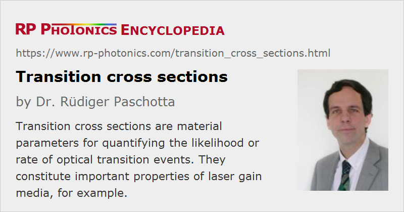

Transition Cross Sections
Definition: material parameters for quantifying the likelihood or rate of optical transition events
More specific term: effective transition cross sections
German: Übergangs-Wirkungsquerschnitte
Categories: lasers, physical foundations
Formula symbol: σ
Units: m2
How to cite the article; suggest additional literature
Author: Dr. Rüdiger Paschotta
In laser physics, transition cross sections are used to quantify the likelihood of optically induced transition events, e.g. of absorption or stimulated emission. For a laser ion in a certain electronic state, the rate of transitions (in events per second) is given as the corresponding cross section times the photon flux (in photons per square meter and second):
where R is the transition rate (in units of s−1), σ is the transition cross section, I is the optical intensity, and h ν is the photon energy.
Transition cross sections depend on the optical frequency (or wavelength). Typically, such transitions involve resonances, which can lead to strongly peaked cross-section spectra.
Absorption and Gain Coefficient
If absorbing atoms or ions with an absorption cross section σabs are distributed with a number density N in a medium, this leads to an intensity absorption coefficient α of the medium which is the product of N and σabs. (For fibers or other waveguides with an undoped cladding, it may be necessary to include also an overlap factor Γ.) In an analogous fashion, the gain coefficient for atoms or ions with a given emission cross section σem can be calculated.
Transition Cross Sections of Laser Gain Media
For a laser gain medium, the most relevant cross sections are the absorption and emission cross sections at the pump and laser wavelengths. In many cases, there is only an absorption cross section for the pump wavelength and an emission cross section (also called laser cross section) for the laser wavelengths. The other transition cross sections are effectively zero, because the lower laser level is quickly depopulated. For such a four-level gain medium, the threshold pump power is inversely proportional to the product of emission cross section and upper-state lifetime. The cross sections influence not only the achievable pump absorption and gain, but also the saturation behavior and the rates of spontaneous transition processes. If there is a non-zero absorption cross section at the laser wavelength, this causes reabsorption (→ four-level and three-level gain media).
In solid-state gain media, laser transitions normally involve different Stark levels of the upper and lower electronic levels (or more precisely, upper and lower Stark manifolds). These sublevel-transitions are spectrally overlapping, so that they are hard to distinguish (at least at room temperature). Depending on the exact wavelength, transitions between different Stark levels contribute with varying degrees. A convenient technique for laser modeling is therefore to use so-called effective transition cross sections, which are a kind of averages of the cross sections of different sublevel transitions, with weight factors depending on population densities in thermal equilibrium. Effective transition cross sections can directly be obtained from spectroscopic measurements without resolving the different sublevel transitions (which would be difficult e.g. in the case of doped glasses). Also, they can be directly used in laser models.
Typical values of absorption and emission cross sections of laser crystals are in the range 10−20–10−18 cm2. Single ions in glasses exhibit similar values, but due to inhomogeneous broadening, the average cross sections of the ions in a glass are often substantially smaller – often several times or even by an order of magnitude. For gain media operating on allowed transitions (rather than forbidden transitions), such as laser dyes or semiconductors, the cross sections are much higher.
Gain media with high emission cross sections and/or broad gain bandwidth tend to have a low upper-state lifetime because of strong spontaneous emission (→ radiative lifetime). Even though quantum noise processes determine the rate of spontaneous emission, that rate is also proportional to the emission cross section and bandwidth. See the article on radiative lifetime for more details.
Measurement of Transition Cross Sections
Absorption cross sections for transitions starting at the ground-state manifold are often obtained from absorption spectra, measured e.g. with a white light source, if the number density (concentration) of the ions is known.
The spectral profile of emission cross sections can be obtained from fluorescence spectra, if no reabsorption modifies the spectral shape and there is no spectral overlap of different fluorescent transitions. Absolute values of emission cross sections can be calculated with the reciprocity method, e.g. via the Füchtbauer–Ladenburg equation. The McCumber relation [1] can also be useful. Emission cross sections e.g. for rare earth ions can also be estimated from absorption cross sections using Judd–Ofelt theory.
Excited-state absorption (e.g. from the upper laser level) is also characterized with cross sections. These are more difficult to measure than those for ground-state absorption, because (a) it is necessary to populate at least partially the corresponding starting level during the measurement, (b) it can be difficult to determine the fraction of ions in that level, and (c) the measured absorption may be modified by absorption or stimulated emission from other levels, which are also populated.
Directional Dependence
For non-isotropic media, transition cross sections can strongly depend on the direction of the polarization of light. For example, the laser gain can be strongly polarization-dependent.
Questions and Comments from Users
Here you can submit questions and comments. As far as they get accepted by the author, they will appear above this paragraph together with the author’s answer. The author will decide on acceptance based on certain criteria. Essentially, the issue must be of sufficiently broad interest.
Please do not enter personal data here; we would otherwise delete it soon. (See also our privacy declaration.) If you wish to receive personal feedback or consultancy from the author, please contact him e.g. via e-mail.
By submitting the information, you give your consent to the potential publication of your inputs on our website according to our rules. (If you later retract your consent, we will delete those inputs.) As your inputs are first reviewed by the author, they may be published with some delay.
Bibliography
| [1] | D. E. McCumber, “Einstein relations connecting broadband emission and absorption spectra”, Phys. Rev. 136 (4A), A954 (1964), doi:10.1103/PhysRev.136.A954 |
| [2] | J. N. Sandoe et al., “Variation of Er3+ cross section for stimulated emission with glass composition”, J. Phys. D: Appl. Phys. 5 (10), 1788 (1972), doi:10.1088/0022-3727/5/10/307 |
| [3] | W. F. Krupke, “Induced-emission cross-sections in neodymium laser glasses”, IEEE J. Quantum Electron. 10 (4), 450 (1974), doi:10.1109/JQE.1974.1068162 |
| [4] | W. J. Miniscalco et al., “General procedure for the analysis of Er3+ cross-sections”, Opt. Lett. 16 (4), 258 (1991), doi:10.1364/OL.16.000258 |
| [5] | W. J. Miniscalco et al., “Measurement and analysis of cross sections for rare earth doped glasses”, Proc. SPIE 1581, 80 (1992), doi:10.1117/12.134973 |
| [6] | S. A. Payne et al., “Infrared cross-section measurements for crystals doped with Er3+, Tm3+, and Ho3+”, IEEE J. Quantum Electron. 28 (11), 2619 (1992), doi:10.1109/3.161321 |
See also: stimulated emission, spontaneous emission, laser transitions, radiative lifetime, effective transition cross sections, Giles parameters, McCumber theory, doping concentration
and other articles in the categories lasers, physical foundations
|  |
If you like this page, please share the link with your friends and colleagues, e.g. via social media:
These sharing buttons are implemented in a privacy-friendly way!